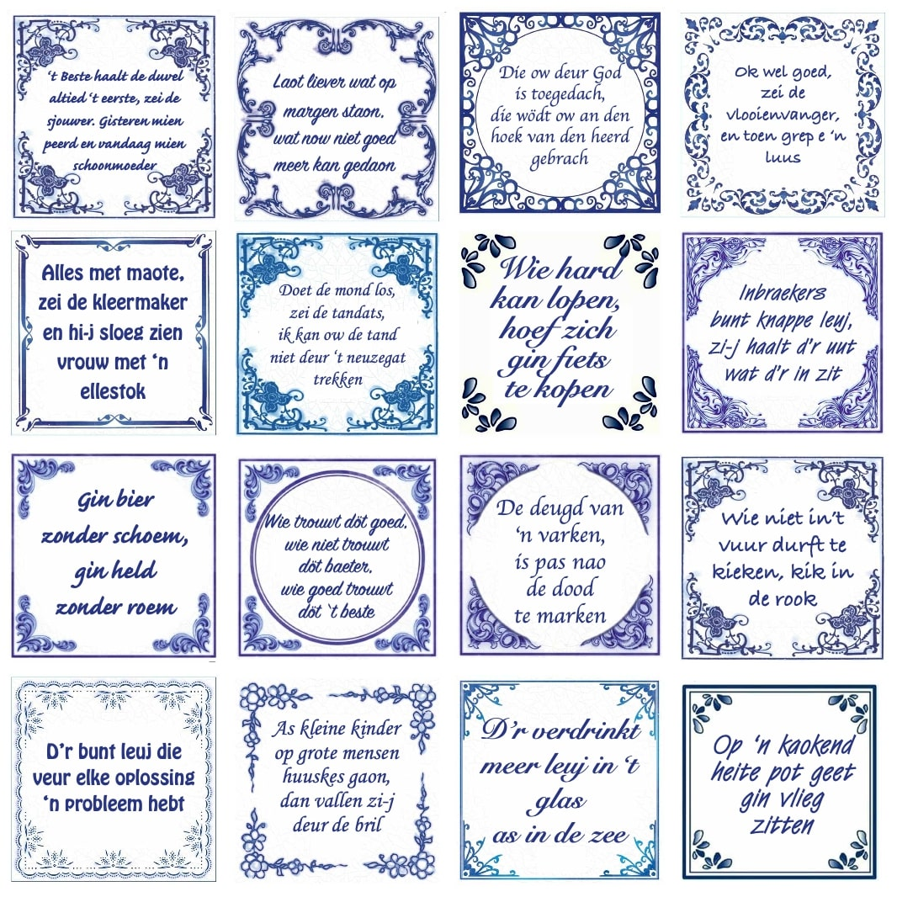

Wat zijn Spreekwoorden?
Spreekwoorden zijn vaste uitdrukkingen of zegswijzen die algemeen bekend zijn in een bepaalde taal. Ze bevatten vaak een wijze les, moraal of waarheid en worden vaak gebruikt in alledaagse gesprekken. Spreekwoorden zijn een vorm van volkswijsheid en kunnen vaak 'kleur' geven aan de taal. Op deze site vind je informatie over verschillende spreekwoorden.